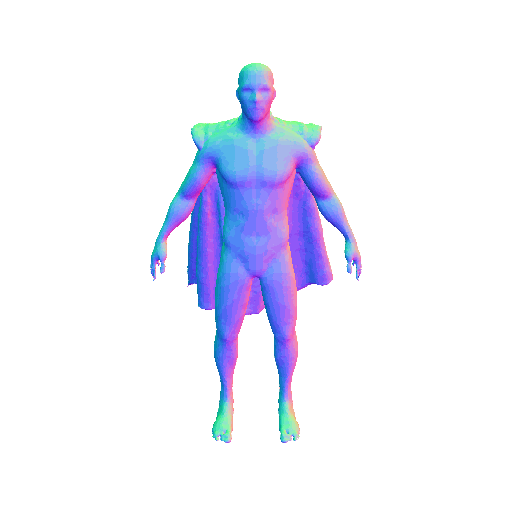
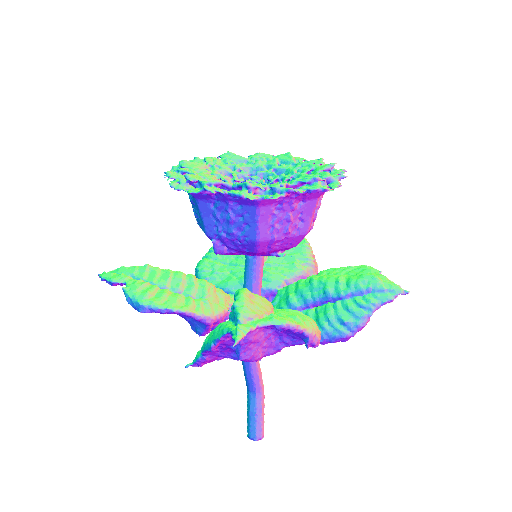
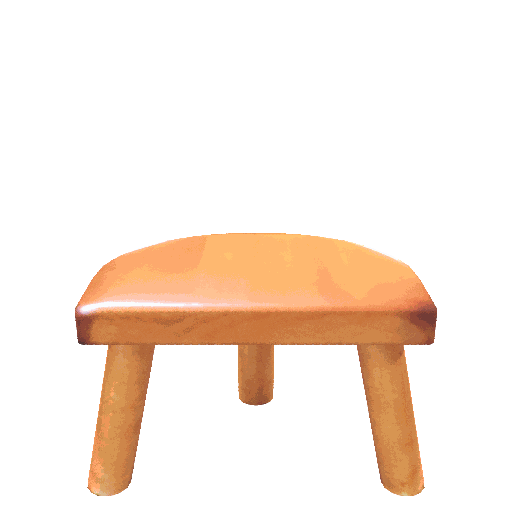
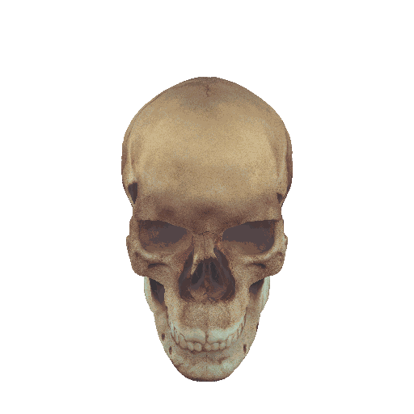

Editing gallery
Edits from FocalDreamer align perfectly with the prompts while faithfully preserving the details of base mesh, achieving precise and meaningful changes to both geometry and texture.
|  | |||||
| a highly detailed pegasus with two wings | Flash Gordon wear the red velvet cape with a golden trim over his shoulder, highly detailed | ||||
|  | |||||
| a red rose with four green leaves | a baby turtle lies on the back of a big turtle | ||||
| a deer standing on two seperate wooden skateboards | a lounge chair with four rollers | ||||
|  |
|||||
| a cat wearing a Chef's hat, highly detailed | a Chinese white ceramic vase with slender neck on a wooden stool | ||||
 |
|||||
| a blue headset with a microphone | a labrador wears a crown with sapphires | ||||
|  |
|||||
| a human skull wearing a pair of dark glasses | a black rhino stands on a wooden bucket | ||||
Abstract
While text-3D editing has made significant strides in leveraging score distillation sampling, emerging approaches still fall short in delivering separable, precise and consistent outcomes that are vital to content creation.
In response, we introduce FocalDreamer, a framework that merges base shape with editable parts according to text prompts for fine-grained editing within desired regions. Specifically, equipped with geometry union and dual-path rendering, FocalDreamer assembles independent 3D parts into a complete object, tailored for convenient instance reuse and part-wise control. We propose geometric focal loss and style consistency regularization, which encourage focal fusion and congruent overall appearance. Furthermore, FocalDreamer generates high-fidelity geometry and PBR textures which are compatible with widely-used graphics engines.
Extensive experiments have highlighted the superior editing capabilities of FocalDreamer in both quantitative and qualitative evaluations.
The good properties of FocalDreamer
SEPARABLE: Given a base shape, FocalDreamer produces structurally separate parts facilitating instance reuse and part-wise post-processing, grounded in widespread understanding.
PRECISE: FocalDreamer also provides fine-grained and local editing, enabling precise control in the desired area, while maintaining other regions untouched.
CONSISTENT: After the editing process, the resultant shape respects the characteristics of the source shape in harmonious appearance, while visually adhering to the text specifications.
Given the prompt "a butterfly over a tree stump", our method delivers high-fidelity geometry and photorealistic appearance using PBR materials. Lines (b-c) showcase instance reuse and part-wise material control, underscoring FocalDreamer's capability for separable and precise edits.
How does it work?

As illustrated in the figure, a complete object is conceptualized as a composition of base shape and learnable parts, wherein both of them possess their own geometry and texture, tailored for convenient instance reuse and part-wise control. Instead of direct modifications to the base shape, the novel editable part is optimized in the focal region. Equipped with geometry union and dual-path rendering, this part is merged with base mesh into a semantically unified shape in a lossless and differentiable manner, then optimized using a powerful text-to-image model to align the prompts and shapes.
Furthermore, a two-stage training strategy is adopted to sequentially learn the geometry and texture of the editable shape inspired by Fantasia3D, to avoid the potential interference that can occur when geometry and texture learning are intertwined.
Finally, geometric focal loss and style consistency regularization are proposed to encourage focal fusion and congruent overall appearance.